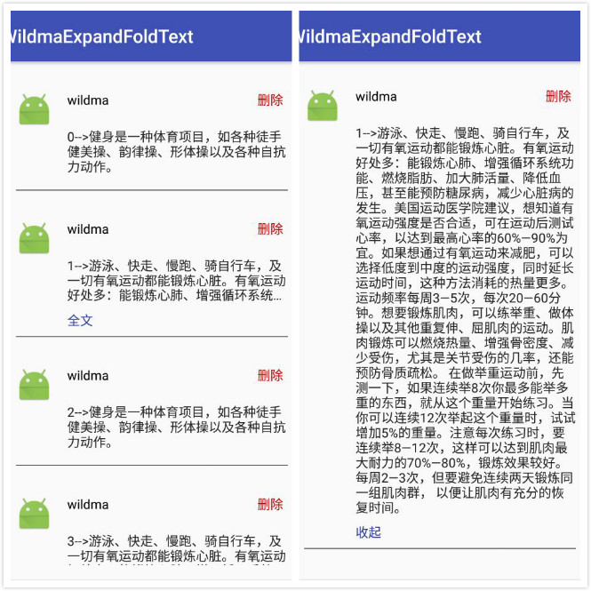

前言
一般在社交APP中都有类似朋友圈的功能，其中发表的动态内容很长的时候不可能让它全部显示。这里就需要做一个仿微信朋友圈全文、收起功能来解决该问题。在网上看到一个例子–> http://blog.csdn.net/e042kuuw/article/details/55107537 ，写的很不错，但是有个bug，他这个Demo只有在条目固定的时候才正常，当增加、删除条目的时候会出现全文、收起显示混乱的问题。原因是他使用了固定的position作为key来保存当前显示的状态。这篇文章在他的基础上进行优化。
效果图

具体代码
（详细解释在代码注释中都有，这里就省略了）
MainActivity.java：
public class MainActivity extends AppCompatActivity {
private RecyclerView mRecyclerView;
List<ExpandFoldTextBean> mList = new ArrayList<>();
@Override
protected void onCreate(Bundle savedInstanceState) {
super.onCreate(savedInstanceState);
setContentView(R.layout.activity_main);
initData();
ExpandFoldTextAdapter adapter = new ExpandFoldTextAdapter(mList, this);
mRecyclerView = (RecyclerView) findViewById(R.id.recyclerview);
mRecyclerView.setLayoutManager(new LinearLayoutManager(this, LinearLayoutManager.VERTICAL, false));
mRecyclerView.setAdapter(adapter);
}
/**
* 初始化数据
*/
private void initData() {
String longContent = "-->游泳、快走、慢跑、骑自行车，及一切有氧运动都能锻炼心脏。有氧运动好处多：能锻炼心肺、增强循环系统功能、燃烧脂肪、加大肺活量、降低血压，甚至能预防糖尿病，减少心脏病的发生。美国运动医学院建议，想知道有氧运动强度是否合适，可在运动后测试心率，以达到最高心率的60%—90%为宜。如果想通过有氧运动来减肥，可以选择低度到中度的运动强度，同时延长运动时间，这种方法消耗的热量更多。运动频率每周3—5次，每次20—60分钟。想要锻炼肌肉，可以练举重、做体操以及其他重复伸、屈肌肉的运动。肌肉锻炼可以燃烧热量、增强骨密度、减少受伤，尤其是关节受伤的几率，还能预防骨质疏松。 在做举重运动前，先测一下，如果连续举8次你最多能举多重的东西，就从这个重量开始练习。当你可以连续12次举起这个重量时，试试增加5%的重量。注意每次练习时，要连续举8—12次，这样可以达到肌肉最大耐力的70%—80%，锻炼效果较好。每周2—3次，但要避免连续两天锻炼同一组肌肉群， 以便让肌肉有充分的恢复时间。";
String shortContent = "-->健身是一种体育项目，如各种徒手健美操、韵律操、形体操以及各种自抗力动作。";
for (int i = 0; i < 20; i++) {
ExpandFoldTextBean bean = new ExpandFoldTextBean();
if (i % 2 == 0) {
bean.setContent(i + shortContent);
bean.setId(i);
} else {
bean.setContent(i + longContent);
bean.setId(i);
}
mList.add(bean);
}
}
}
ExpandFoldTextAdapter.java：
/**
* Author wildma
* DATE 2017/8/3
* Des ${展开折叠文本适配器}
*/
public class ExpandFoldTextAdapter extends RecyclerView.Adapter<ExpandFoldTextAdapter.MyViewHolder> {
private Activity mContent;
private final int MAX_LINE_COUNT = 3;//最大显示行数
private final int STATE_UNKNOW = -1;//未知状态
private final int STATE_NOT_OVERFLOW = 1;//文本行数小于最大可显示行数
private final int STATE_COLLAPSED = 2;//折叠状态
private final int STATE_EXPANDED = 3;//展开状态
/**
* 注意：保存文本状态集合的key一定要是唯一的，如果用position。
* 如果使用position作为key，则删除、增加条目的时候会出现显示错乱
*/
private SparseArray<Integer> mTextStateList;//保存文本状态集合
List<ExpandFoldTextBean> mList;
public ExpandFoldTextAdapter(List<ExpandFoldTextBean> list, Activity context) {
mContent = context;
this.mList = list;
mTextStateList = new SparseArray<>();
}
@Override
public MyViewHolder onCreateViewHolder(ViewGroup parent, int viewType) {
return new MyViewHolder(mContent.getLayoutInflater().inflate(R.layout.item_expand_fold_text, parent, false));
}
@Override
public void onBindViewHolder(final MyViewHolder holder, final int position) {
int state = mTextStateList.get(mList.get(position).getId(), STATE_UNKNOW);
//第一次初始化，未知状态
if (state == STATE_UNKNOW) {
holder.content.getViewTreeObserver().addOnPreDrawListener(new ViewTreeObserver.OnPreDrawListener() {
@Override
public boolean onPreDraw() {
//这个回掉会调用多次，获取完行数后记得注销监听
holder.content.getViewTreeObserver().removeOnPreDrawListener(this);
//holder.content.getViewTreeObserver().addOnPreDrawListener(null);
//如果内容显示的行数大于最大显示行数
if (holder.content.getLineCount() > MAX_LINE_COUNT) {
holder.content.setMaxLines(MAX_LINE_COUNT);//设置最大显示行数
holder.expandOrFold.setVisibility(View.VISIBLE);//显示“全文”
holder.expandOrFold.setText("全文");
mTextStateList.put(mList.get(position).getId(), STATE_COLLAPSED);//保存状态
} else {
holder.expandOrFold.setVisibility(View.GONE);
mTextStateList.put(mList.get(position).getId(), STATE_NOT_OVERFLOW);
}
return true;
}
});
holder.content.setMaxLines(Integer.MAX_VALUE);//设置文本的最大行数，为整数的最大数值
holder.content.setText(mList.get(position).getContent());
} else {
//如果之前已经初始化过了，则使用保存的状态。
switch (state) {
case STATE_NOT_OVERFLOW:
holder.expandOrFold.setVisibility(View.GONE);
break;
case STATE_COLLAPSED:
holder.content.setMaxLines(MAX_LINE_COUNT);
holder.expandOrFold.setVisibility(View.VISIBLE);
holder.expandOrFold.setText("全文");
break;
case STATE_EXPANDED:
holder.content.setMaxLines(Integer.MAX_VALUE);
holder.expandOrFold.setVisibility(View.VISIBLE);
holder.expandOrFold.setText("收起");
break;
}
holder.content.setText(mList.get(position).getContent());
}
//全文和收起的点击事件
holder.expandOrFold.setOnClickListener(new View.OnClickListener() {
@Override
public void onClick(View v) {
int state = mTextStateList.get(mList.get(position).getId(), STATE_UNKNOW);
if (state == STATE_COLLAPSED) {
holder.content.setMaxLines(Integer.MAX_VALUE);
holder.expandOrFold.setText("收起");
mTextStateList.put(mList.get(position).getId(), STATE_EXPANDED);
} else if (state == STATE_EXPANDED) {
holder.content.setMaxLines(MAX_LINE_COUNT);
holder.expandOrFold.setText("全文");
mTextStateList.put(mList.get(position).getId(), STATE_COLLAPSED);
}
}
});
//删除点击事件
holder.delete.setOnClickListener(new View.OnClickListener() {
@Override
public void onClick(View view) {
mList.remove(position);
notifyDataSetChanged();
}
});
}
@Override
public int getItemCount() {
return mList.size();
}
public class MyViewHolder extends RecyclerView.ViewHolder {
public TextView nickname;
public TextView content;
public TextView delete;
public TextView expandOrFold;
public MyViewHolder(View itemView) {
super(itemView);
nickname = (TextView) itemView.findViewById(R.id.tv_nickname);
content = (TextView) itemView.findViewById(R.id.tv_content);
delete = (TextView) itemView.findViewById(R.id.tv_delete);
expandOrFold = (TextView) itemView.findViewById(R.id.tv_expand_or_fold);
}
}
}
ExpandFoldTextBean.java：
public class ExpandFoldTextBean {
private String content;//内容
private int id;//该条数据的id
public String getContent() {
return content;
}
public void setContent(String content) {
this.content = content;
}
public int getId() {
return id;
}
public void setId(int id) {
this.id = id;
}
}activity_main.xml：
<?xml version="1.0" encoding="utf-8"?>
<RelativeLayout
android:id="@+id/activity_main"
xmlns:android="http://schemas.android.com/apk/res/android"
android:layout_width="match_parent"
android:layout_height="match_parent"
android:paddingBottom="@dimen/activity_vertical_margin"
android:paddingLeft="@dimen/activity_horizontal_margin"
android:paddingRight="@dimen/activity_horizontal_margin"
android:paddingTop="@dimen/activity_vertical_margin">
<android.support.v7.widget.RecyclerView
android:id="@+id/recyclerview"
android:layout_width="match_parent"
android:layout_height="match_parent">
</android.support.v7.widget.RecyclerView>
</RelativeLayout>item_expand_fold_text.xml：
<?xml version="1.0" encoding="utf-8"?>
<LinearLayout xmlns:android="http://schemas.android.com/apk/res/android"
android:layout_width="match_parent"
android:layout_height="wrap_content"
android:orientation="vertical"
android:paddingBottom="@dimen/activity_vertical_margin"
android:paddingLeft="@dimen/activity_horizontal_margin"
android:paddingRight="@dimen/activity_horizontal_margin"
android:paddingTop="@dimen/activity_vertical_margin">
<LinearLayout
android:layout_width="match_parent"
android:layout_height="wrap_content"
android:layout_gravity="center_vertical"
android:orientation="horizontal">
<ImageView
android:layout_width="40dp"
android:layout_height="40dp"
android:layout_marginRight="16dp"
android:gravity="center"
android:scaleType="centerCrop"
android:src="@mipmap/ic_launcher"/>
<RelativeLayout
android:layout_width="match_parent"
android:layout_height="wrap_content">
<TextView
android:id="@+id/tv_nickname"
android:layout_width="wrap_content"
android:layout_height="wrap_content"
android:text="wildma"
android:textColor="@android:color/black"
android:textSize="14sp"/>
<TextView
android:id="@+id/tv_delete"
android:layout_width="wrap_content"
android:layout_height="wrap_content"
android:layout_alignParentRight="true"
android:layout_marginLeft="12dp"
android:paddingLeft="5dp"
android:paddingRight="5dp"
android:text="删除"
android:textColor="@android:color/holo_red_dark"
android:textSize="14sp"/>
</RelativeLayout>
</LinearLayout>
<LinearLayout
android:layout_width="match_parent"
android:layout_height="wrap_content"
android:layout_marginLeft="56dp"
android:orientation="vertical"
android:paddingBottom="8dp">
<TextView
android:id="@+id/tv_content"
android:layout_width="wrap_content"
android:layout_height="wrap_content"
android:layout_marginBottom="8dp"
android:alpha="0.85"
android:ellipsize="end"
android:text="内容"
android:textColor="@android:color/black"
android:textSize="14sp"/>
<TextView
android:id="@+id/tv_expand_or_fold"
android:layout_width="wrap_content"
android:layout_height="wrap_content"
android:text="全文"
android:textColor="@color/colorPrimaryDark"
android:textSize="14sp"/>
</LinearLayout>
<View
android:layout_width="match_parent"
android:layout_height="0.5dp"
android:background="@android:color/black"/>
</LinearLayout>源码地址：https://github.com/wildma/WildmaExpandFoldText
参考：http://blog.csdn.net/e042kuuw/article/details/55107537